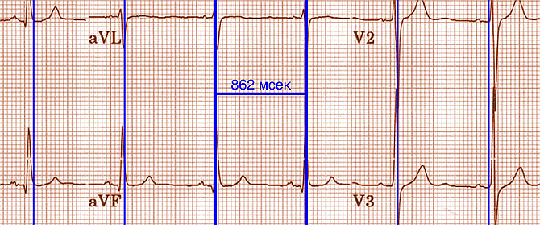
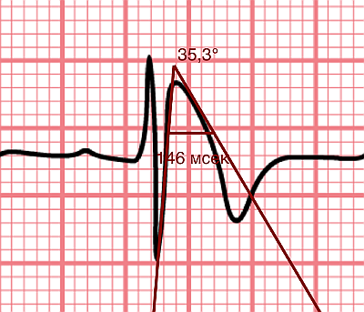

Быстрый старт
Во время начала работы ЭФИ калипер загружается образец ЭКГ и калипер времени. Передвинуть калипер можно прикоснувшись к его планке и перетащив пальцем. Увеличить или уменьшить калипер можно коснувшись пальцами одной из вертикальных панелей и перетащив её. При необходимости уменьшайте и увеличивайте масштаб изображения ЭКГ. Если изображение ЭКГ больше, чем ваш экран, то вы можете перетащить изображение пальцем и выбрать место для измерения. Откалибруйте калипер чтобы сделать измерения.
Загрузка изображения
Есть несколько способов загрузить ЭКГ изображение.
- Сделать фото ЭКГ
- Выберите фото из фотопленки
- Используйте Поделиться чтобы выбрать фото или PDF из других приложений
AliveCor
Для того чтобы просмотреть изображение ЭКГ из приложения AliveCor Kardia, выберите Журнал, затем Поделиться для конкретной сохраненной ЭКГ, которую вы хотите просмотреть. После выбора кнопки Поделиться, выберите PDF из опций, которые открываются. Затем выберите Поделиться в правом верхнем углу экрана.
Настойка изображения
Вы можете отрегулировать положение изображения с помощью сведения и разведения пальцев и прокрутки файла пальцем. Долгое нажатие на изображение вызовет меню, позволяющее поворачивать изображение и листать страницы, если вы загрузили PDF.
Заблокировать изображение на месте
При перемещении и регулировке калиперов вы можете иногда непреднамеренно переместить основное изображение. Выберите Заблокировать, чтобы блокировать изображение. В верхней части экрана появляется сообщение, указывающее, что изображение заблокировано. Разблокируйте изображение, выбрав Разблокировать.
Настройка калиперов
Перетащите планку калипера, чтобы переместить его как единое целое. Передвиньте левую или правую планку (или сверху или снизу если это калиперы амплитуды), чтобы растянуть или сжать калиперы. Калиперы угла перемещаются как единое целое, перемещаясь в вершине или чуть выше вершины угла.
Добавляйте и удаляйте калиперы
выбрав + чтобы добавить новый калипер. Выберите Время, Амплитуда или Угол чтобы добавить калипер, который вы хотите. Дважды нажмите на калипер, чтобы удалить его.
Выбор калипера
Когда используются несклько калиперов, необходимо, чтобы один из них был активным когда вы калибруете или производите вычисления. По умолчанию неактивный калипер синего цвета, а активный - красного. Вы можете изменить эти цвета, используя функцию Индивидуальные настройки, или это можно сделать с помощью изменить индивидуальные цвета калиперов. Вы можете активировать калипер одним нажатием. Коснитесь его еще раз (но не слишком быстро, так как двойное нажатие удалит калипер), чтобы деактивировать его.
Больше возможностей калипера
Точная настройка положения калипера
Долгим нажатием на калипер выберите Tweak в меню. Затем нажмите на калипер (поперечная планка, боковая планка или, в случае углового суппорта, вершина угла) и появится меню с кнопками перемещения. Кнопки со стрелками влево и вправо или вверх и вниз перемещают выбранный компонент калипера или весь калипер с помощью микроперемещений. Вы можете перемещать либо боковую планку (или угол углового калипера), либо калипер целиком по градациям одной точки (≈ пиксель) или десятой части, в зависимости от того, какой тип стрелки вы нажимаете (⇨ или →). Нажмите кнопку Готово, чтобы вернуться в главное меню.
Фиксированный (шагающий) калипер

Рис. 1.: Фиксированный калипер
Long press a caliper and выберите Шаг, чтобы использовать калипер с определенным фиксированным шагом. Появятся вертикальные линии с каждой стороны калипера, равные его ширине. Это очень удобно для анализа регулярности ритма и детекции волны Р, проявляющейся на фоне тахикардии или во время блокады сердца. Выберите "Шаг", чтобы снова вернутся к обычному калиперу.
Калибровка
Выберите Калибр или Калибровка. Протяните выбранный калипер на известный интервал (например, 1000 мс для времени или 10 мм для амплитуды). Выберите Установить. В диалоговом окне убедитесь, что интервал соответствует тому, что вы измеряете. Введите как интервал калибровки, так и единицы измерения (например, 500 мс или 1 сек или 1 мВ). Выберите * Установить * в диалоговом окне чтобы установить калибровку. Обратите внимание, что время и амплитуду необходимо калибровать отдельно. После калибровки калиперы будут показывать интервалы в единицах, используемых для калибровки. Вновь созданные калиперы будут использовуть ту же калибровку. Калиперы угла не требуют калибровки. Однако, после калибровки времени и амплитуды, калиперы угла могут быть использованы как Бругадометры.
Изменение калибровки
Вы можете выполнить перекалибровку в любое время. Вы можете очистить всю калибровку, выбрав Очистить на панели калибровки. Обратите внимание, что калибровка поддерживается, если устройство повернуто или изображение увеличено. Выбор нового изображения приведет к сбросу калибровки.
Выполнение измерений
Интервал, измеренный калиперами времени или амплитуды, отображается сверху или рядом с планкой калипера. До тех пор, пока эти калиперы калибруются, измерения отображаются в произвольных единицах (пикселях, эквивалент пикселям на экране). Угловые калиперы показывают текущий угол в градусах и не требуют калибровки для измерения угла.
Интервал / Частота
После калибровки (горизонтального) калипера времени, если вы используете единицы измерения времени (например, мсек или сек) для калибровки, можно переключаться между интервальными измерениями (например, 600 мс) и измерениями сердечного ритма (например, 100 уд/мин), выбирая Интервал/Частота на iPad (или И/Ч на iPhone).
Расчет средней частоты и интервала
Выберите откалиброванный калипер и растяните его на несколько интервалов по времени. Выберите Средняя частота или срЧаст и введите количество измеряемых интервалов. В диалоговом окне будет отображаться средняя частота и интервалы сердечных сокращений. Это полезно для расчета частоты и интервалов при нерегулярном ритме, например фибрилляции предсердий.
Расчет QTc
Выберите QTc. Растяните выбранный калипер на один или несколько RR интервалов и выберите Измерить. Введите количество интервалов, которое включает калипер и выберите Продолжить. Затем используйте тот же калипер для измерения интервала QT. Выберите Измерить. В диалоговом окне появится значение QTc, по умолчанию рассчитанное по формуле Базетта. Выберите Повторить QT, чтобы выполнить другое измерение QT с использованием того же интервала RR. Выберите Готово, чтобы закончить измерение QTc. Вы можете изменить формулу QTc, используя настройки приложения.
Бругадометр

Рис. 2.: Бругадометр представлен треугольником с основаниием 5 mm ниже вершины угла калипера
Бругадометр - это диагностический инструмент используемый при синдроме Бругады, разработанный в сотрудничестве с доктором Адрианом Баранчуком и его коллегами по Королевскому университету Кингстон (Онтарио, Канада). Он предназначен для диагностики на ЭКГ синдрома Бругады и неполной блокадой правой ножки п.Гиса. Этот инструмент находится в разработке в ЭФИ калипер и, вероятно, будет развиваться в следующих обновлениях. Чтобы использовать Бругадометр, необходимо откалибровать калипер амплитуды в миллиметрах (мм) и калипер времени (предпочтительно) в мс или мм. После этого калипер угла будет треугольным у вершины. Основание треугольника будет располагаться на 5 мм ниже вершины треугольника. Правильное совмещение этого треугольника с волной r' на ЭКГ у человека с подозрением на синдром Бругада позволит измерить так называемый бета угол и основание треугольника. Если основание треугольника >160 мс (4 мм при стандартной ЭКГ со скоростью записи 25 мм/с) высока вероятность картины ЭКГ с признаками Бругада. Пожалуйста, посмотрите de Luna AB, Garcia-Niebla J, Baranchuk A. New electrocardiographic features in Brugada syndrome. Curr Cardiol Rev. 2014 Aug; 10(3): 175-180 для подробной информации.
Индивидуальные настройки
Такие настройки, как цвета калипера и калибровка интервалов по умолчанию, можно выбрать в приложении «Настройки» вашего устройства в разделе ЭФИ калипер. Вы также можете изменить настройки, выбрав Настройки из меню. После изменения настроек возвращайтесь в приложение, выбрав значок обратно в левом верхнем углу экрана настроек.